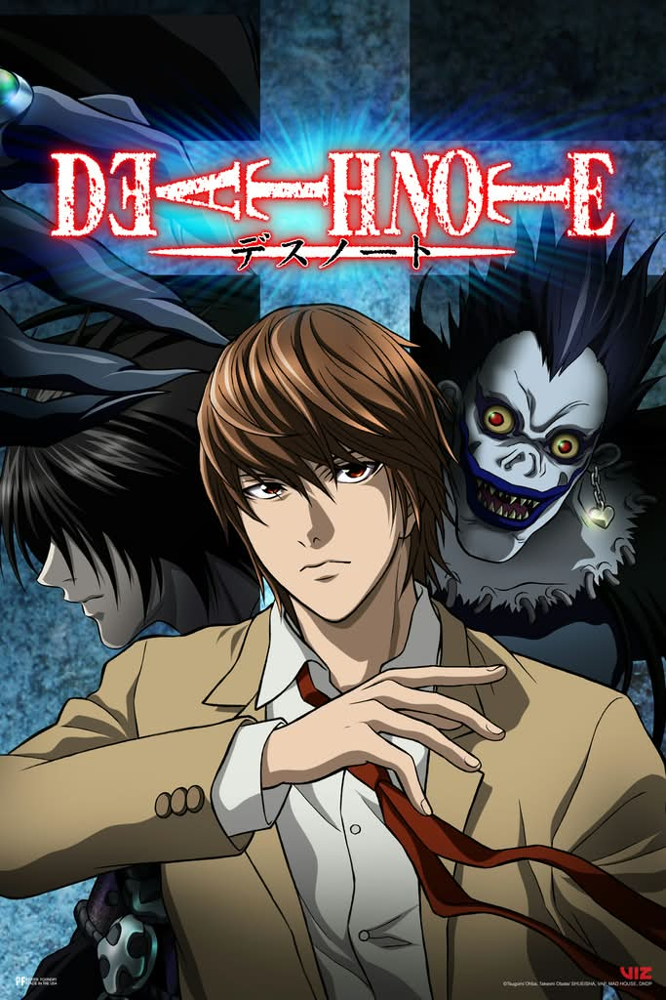

UNOFFICIAL FAN STORY · CHAPTER 01
Death Note
A student discovers a notebook that seems to predict secrets. The closer they get to the truth, the more carefully they must question their own judgment.
Chapter One: A New Beginning
Mika found the black notebook beneath a library desk. Its first page held a list of names and dates—events that had not yet happened. She assumed it was an elaborate prank until one prediction came true.
Rather than test the notebook, Mika took it to her teacher, who advised her to document what she knew and avoid jumping to conclusions. Together they traced the handwriting to a forgotten archive and discovered that someone had been using the notebook to frighten the school.
The final clue led to a locked cabinet, where a second notebook held the missing context: the names were characters in an unpublished mystery story. The real trick was how easily fear had made the list seem powerful.
Mika returned the notebook to the archive. Some mysteries were solved best by asking questions before believing answers.
This is an unofficial, original fan-made story and is not affiliated with the official creators or publishers.